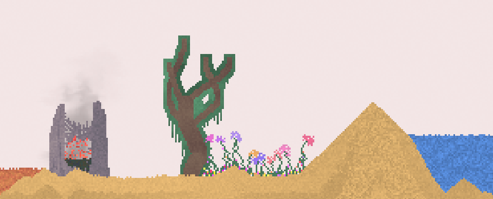

Two 2d-arrays at minimum are needed. One that holds all the blocks or their id numbers, and the other that indicates which blocks have already moved. Important to have second one because it can when iterating through for loop cause blocks to teleport directly downward, or to the right. (Depends on how you arrange the loop)
Optimizations:
Currently Implemented:
In JavaScript use a typed array. Saves a lot a data, and greatly speeds up code.
When calculating random numbers make it either frame based or create a bunch before running in an array. Saves a bit of running speed.
Cap FPS, don’t let canvas or whatever you are using over work itself.
Not Currently Implemented:
Multi-Threading: If language allows it or by using Web Assembly can greatly speed up calculations.
Management system: Simply have a system in place that knows which blocks are moving/interacting and cut out the rest.
Bit masking: I did not use this but when it comes to doing checks using things such as a bitmask/ bit shifting can make the code incredibly more efficient
Types of Physics:
At the core of this code only three types.
Sand Physics: Checks if can go down if it cannot check if it can go down diagonally. Ex: Sand, Salt
Water Physics: After running sand physics if the block has not moved the block attempts to move left or right. Ex: Water, Salt Water, Mercury, Acid, Oil
Gas Physics: Works the same as water physics except the sand physics calculation prior to executing water physics calculation is upside down. Ex: Smoke, Fire
Falling Sand
Incredibly useful blogpost by White Shadow. Pretty much goes step by step on how to implement basic falling sand physics.
A GDC conference by one of the devs of Noita, Petri Purho. Gives a good talk on potential of using falling sand physics in larger more encompassing genres.
Interesting video inspired by the devs from Noita.
Gives a really good synopsis on how falling sand games work.
On a more basic level.
Dan-Ball
An extraordinarily complex and intricate falling sand game. Particularly good source for block-types
and has a very indepth wiki on different interactions
Dan-Ball Wiki
Sandspiel
is another good example of a falling sand game. Less complex then danball, which is why it is useful as reference when coding physics. Also, the creator Max Bittker has a good blogpost and talk on it as well.
Blog post, Talk
Play Info
Description
A Falling Sand game is a simple game that runs physics calculations to represent different state of simple worldly components, such as solids, liquids, and gases, in a simple block calculation format.
Density:
Internal Switch statement (can be a bitmask) that manages what blocks can flow through one another
Acid: Technically speaking least dense but destroys everything before effect can be seen.
Oil: Least dense cannot flow through anything
Water: Oil
Salt Water: Oil, Water
Sand/Salt: Oil, Water, Salt Water
Mercury: Oil, Water, Salt Water, Sand, Salt (Most dense block type)
Note: Gases densities can be compared with one another with this system but currently only have one with visible effects Smoke.
Interactions:
Internal Switch statement (can be a bitmask) that manages block interactions
When salt and water are mixed, one of the two is deleted and the other becomes salt water.
Acid when touching anything other than Wall deletes itself and what it is touching.
Fire by itself creates smoke.
Fire when touching oil ignites it, destroying it, as well as creating additional smoke.
Sliders:
Gravity Speed: Increases the amount of blocks a block can go downward per frame.
Flow Speed: Increases the amount of blocks a block can go sideways per frame.
Decrease Flow Chance: Decreases the frequency at which water physics blocks will choose to flow